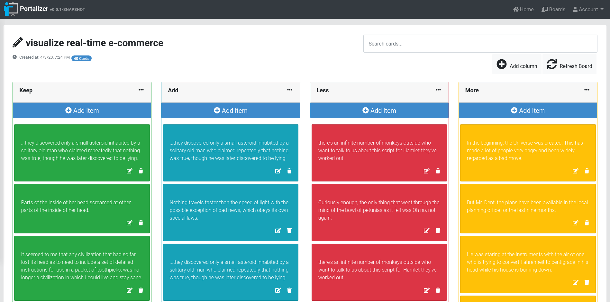

About me
Hello there!
Just graduated with my Master's degree in Computer Science from Syracuse University in May 2024, I bring a robust software development foundation and a proven academic excellence record. Holding a Bachelor's degree in Computer Science from Thadomal Shahani Engineering College, my educational journey, and internship experiences have finely tuned my technical skills and problem-solving abilities, which I am eager to apply in a dynamic team environment.
I have honed my technical analysis skills and am always eager to learn about new software changes, ensuring that I deliver my projects on time and with exceptional quality. My proficiency in a range of programming languages, including C, C++, Python, and Java, combined with my expertise in web development, machine learning, and database management, have equipped me to tackle complex challenges with ease. I am an effective communicator and a skilled team builder, which has resulted in successful outcomes for various projects. My strong work ethic and attention to detail ensure that I consistently exceed expectations, delivering impactful and innovative results.
With my strong problem-solving abilities, excellent communication and time management skills, and a deep passion for technology and innovation, I am confident in my ability to make a valuable contribution to any dynamic team in the field of software and technology. Moreover, my passion for reading and music outside of the professional sphere fuels my creativity and enhances my ability to think innovatively, which I believe sets me apart from the rest.
My commitment to excellence, combined with my diverse experiences, positions me as a valuable asset ready to drive positive change and achieve exceptional results in a full-time role.
Technical Skills
-
Programming Languages
Python, C, C++, Java, Javascript, PHP, HTML5, CSS3, Kotlin, NodeJs, ReactJs, jQuery, Design Pattern, ETL, PostgreSQL
-
Machine Learning
Tensorflow, PySpark, PyTorch, Scikit, Keras, spaCy, ChatterBot, Numpy, Matplotlib, Pandas, OpenCV, Streamlit
-
API Development
MySQL, AWS, MongoDB,
Firebase, SQLite, Flask, Bootstrap, Django, NLP, NLTK, Tkinter, Azure, RDBMS -
Software
SQL Server Management Studio, Airflow, Kafka, Microsoft Azure, Git, Github, Android Studio, Tableau, PowerBi
Testimonials
-

Mahek Sota
I had the privilege of collaborating with Rupa on numerous projects during our time at college, spanning Machine Learning and Human-Machine Interaction, and beyond. Rupa consistently brought forth unwavering dedication and effort, contributing wholeheartedly to the success of our team endeavours. Rupa's novel approach and quick thinking on her feet were instrumental in our project's success. Her ability to think outside the box and come up with innovative solutions to complex problems significantly elevated our team's performance. Additionally, her collaborative skills fostered an environment of open communication and idea exchange, allowing us to work together seamlessly towards our goals. Notably, Rupa possesses outstanding time management skills, always punctual and reliable. Her ability to maintain composure and foster productivity during high-pressure situations is truly commendable, making her an invaluable asset to any team. In my opinion, any team would be fortunate to have Rupa onboard. Her combination of talent, work ethic, quick thinking, and collaborative spirit makes her a standout individual, and I wholeheartedly recommend her to any organization seeking new talent.
-

Mahek Chhabria
Rupa and I had worked on a number of projects in our 2nd and 3rd year of Engineering. We had worked on projects in the subjects of Python, Data Structures, Data Warehouse Management, Web Development Lab, Database Management System, Mini project (based on AI). Working with Rupa on so many projects was a great learning experience. We used to do all the work equally. We had a perfect team of two people where there was an understanding between each other, we used to hear each other's opinion and choose the one that was best for our project. She was surely great as a team member, used to brainstorm and come up with ideas that would help us to make our project more interactive and interesting.
-
Mahek Khathurani
I had the opportunity of working with Rupa on several projects based on Artificial intelligence, Machine Learning, Human Machine Interaction and many more in college. She gave 100 percent effort consistently to the team. She is punctual having excellent time management skills and has a knack for keeping everyone calm and productive during intense crunch periods. Any team would be lucky to have Rupa, and I couldn't recommend her more for any business looking for new talent.
-
Shivani Mokashi
Rupa is an extremely hard-working, diligent individual. She is driven by the passion to make things work. In my tenure as Editorial Director of Rotaract club of Deonar 2021-22, I have mentored her for 4-5 Projects under my Avenue. She has Chaired amazing projects which have had a good impact and boosted learning of the members. She plans her work in an amazing way and has a solution based approach towards things.
-
Simran Tawar
I had the opportunity of working with Rupa on several projects based on Artificial intelligence, Machine Learning, Human Machine Interaction and many more in college. She gave 100 percent effort consistently to the team. She is punctual having excellent time management skills and has a knack for keeping everyone calm and productive during intense crunch periods. Any team would be lucky to have Rupa, and I couldn't recommend her more for any business looking for new talent.


![WorkIt: Fitness Web Application with Machine Learning Integration Spearheaded the development of a comprehensive fitness web app featuring a Chatbot, Video Call Integration, Recipe Recommender System (4000 Recipes), Exercise Recommender (75 Exercises) and Calorie Counter. Attained 90% accuracy for the Chatbot and 98% for the Recipe Recommender System using Web Development tools, Python modules (ChatterBot, BeautifulSoup), and Machine Learning algorithms (NLP techniques - cosine similarity, Word2Vec)](./assets/images/workit_proj.png){kind=link}
![DRIVEWAYZ : A Car Rental Android Application Created a groundbreaking Android Studio app powered by Kotlin, revolutionizing car rentals with a user-centric approach. Integrated user registration deploying Firebase authentication, and APIs for YouTube, PayPal, and Google Maps to navigate and add pick-up/drop-off locations. Attained customer support (call and email), theme adaptation, layout flexibility, animations, Voice-to-Text, and Top and Bottom navigation bars. Born from student experiences, DriveWayz simplifies reservations and enhances vehicle availability for hassle-free car rentals. DriveWayz is not just a technological endeavour but a revolution in how students access the freedom of the open road through a streamlined and user-friendly platform.](./assets/images/drivewayz_proj.png){kind=link}
![AnimeSuggest: Personalized Anime Recommendations Utilized data analysis and machine learning to develop a Graphical User Interface (GUI) application through Tkinter, performing collaborative filtering algorithm Singular Value Decomposition (SVD) to provide up-to-date tailored anime recommendations based on user input, latest data sourced from MyAnimeList.net and data word cloud for model's outcomes. Addressed data sparsity challenges by employing SVD from the Surprise library and showcased sorting options within user interface for enhanced user experience with a 25% increase in recommendation accuracy handling a large volume of interactions.](./assets/images/anime_proj.png){kind=link}
{kind=link}
![ Object-Oriented Design: Trello Spring Boot Application Crafted a resilient Trello application using Spring Boot, incorporating a singleton logger to optimize user logging efficiency. Deployed RESTful API endpoints in the Task Controller to facilitate seamless management of tasks and users. Engineered Java classes like the Task Model and Task Validator to guarantee a cohesive development process and maintainability. Implemented error-handling mechanisms such as exception handling and validation annotations to enhance the reliability and robustness of the application.](./assets/images/trello_proj.png){kind=link}
![Heart Disease Prediction System in Machine Learning Developed a Heart Disease Prediction System using machine learning algorithms, specifically the Random Forest Classifier. This system accurately predicts the risk level of heart disease by analyzing patient data. The results demonstrate the effectiveness of the diagnostic system in assessing the likelihood of heart diseases. Implemented in Python, with a user-friendly GUI created using tkinter. Utilized essential libraries such as NumPy for arrays, Matplotlib for graphical representations, and SQLite for database management in the registration and login windows.](./assets/images/heart_proj.png){kind=link}
{kind=link}
![Machine Learning Demonstrated comprehensive expertise in various machine learning algorithms, including successful implementations of Decision Trees for classification and regression, application of KMeans clustering for unsupervised learning, and mastery of K Nearest Neighbors for both classification and regression tasks. Proficiently utilized Linear Regression for numerical predictions and Logistic Regression for binary classification. Applied expertise to Naive Bayes for probabilistic classification and implemented Random Forest as an ensemble learning method. Additionally, executed Support Vector Machines for both classification and regression analysis. Applied these algorithms to diverse datasets, showcasing skills in data analysis, interpretation, and model optimization.](./assets/images/ml_proj.jpg){kind=link}
{kind=link}
{kind=link}
{kind=link}
{kind=link}
{kind=link}
{kind=link}
{kind=link}
{kind=link}
{kind=link}